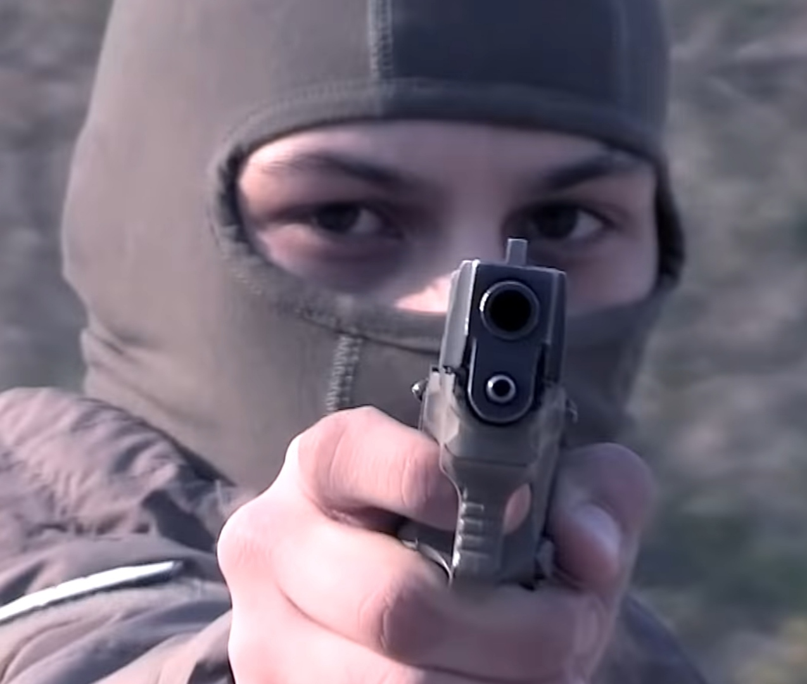

В бытность мою в С—м уезде мне часто приходилось бывать на Дубовских огородах у огородника Саввы Стукача, или попросту Савки. Эти огороды были моим излюбленным местом для так называемой «генеральной» рыбной ловли, когда, уходя из дому, не знаешь дня и часа, в которые вернешься, забираешь с собой все до одной рыболовные снасти и запасаешься провизией. Собственно говоря, меня не так занимала рыбная ловля, как безмятежное шатанье, еда не вовремя, беседа с Савкой и продолжительные очные ставки с тихими летними ночами. Савка был парень лет 25, рослый, красивый, здоровый, как кремень. Слыл он за человека рассудительного и толкового, был грамотен, водку пил редко, но как работник этот молодой и сильный человек не стоил и гроша медного. Рядом с силой в его крепких, как веревка, мышцах разливалась тяжелая, непобедимая лень. Жил он, как и все на деревне, в собственной избе, пользовался наделом, но не пахал, не сеял и никаким ремеслом не занимался. Старуха мать его побиралась под окнами, и сам он жил, как птица небесная: утром не знал, что будет есть в полдень. Не то, чтобы у него не хватало воли, энергии или жалости к матери, а просто так, не чувствовалось охоты к труду и не сознавалась польза его... От всей фигуры так и веяло безмятежностью, врожденной, почти артистической страстью к житью зря, спустя рукава. Когда же молодое, здоровое тело Савки физиологически потягивало к мышечной работе, то парень ненадолго весь отдавался какой-нибудь свободной, но вздорной профессии вроде точения ни к чему не нужных колышков или беганья с бабами наперегонку. Самым любимым его положением была сосредоточенная неподвижность.